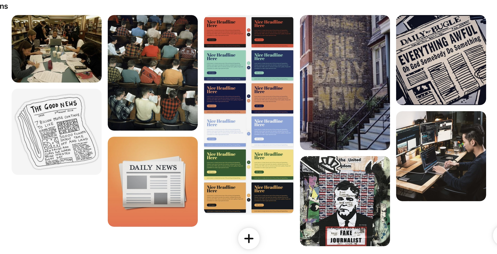

Task 4: Reflective Statement
I chose my audience because they fit into the student category. They both had experienced coming across fake news at some point in their lives and both needed to use social media or Google to find information online. The design needs seem to create importance around referencing where information was retrieved from in an accurate manner, a simple and clear layout of the website with no sensationalism, to become a reputable and well-trusted website and to ensure that information on the website is only gathered from reputable sources so that they do not need to spend tons of time fact-checking everything.
Week Two's Lab Tasks: Establishing Ideas for Design
Task 1: Website Evaluation
BBC News Website
The Audience:
Can you tell who the project is aimed at?
Yes. It is clear that it has been created for the general public with a focus on being inclusive by allowing for an international audience too. They are attracting people who want to stay informed about current world events on an international or national scale. The articles on the website are mainly in English, so a basic level of proficiency is needed. They also have content that can appeal to all ages and genders.
Does the range and depth of material seem appropriate for the topic and audience?
Yes, it is appropriate. The general public is reached by offering a wide variety of stories so that almost anyone can find a topic they would be interested in reading. The international audience is reached by allowing you to search for a specific country’s events and it posts other country’s events on its homepage too. Generally, people trust their news reporting as they report in a formal and factual manner. They also achieve age diversity by offering many different topics, catering for all interests a person may have.
Does the project provide any means of feedback, interaction, experience?
The BBC News Website offers feedback and interaction by allowing people to reach out to them via email, to follow them on Twitter and post their opinions or feedback. They also have a section on their website where you can make an editorial complaint. The website is easy to navigate, has a user-friendly design with all of its clear headings and subsections. It also states the date an article was posted as well as the minutes or hours since it’s been posted which allows people to read the most recent news daily.
Affordances, conceptual models and signifiers:
What is the purpose of the project?
The purpose of the BBC News website is to keep the public informed about daily, weekly and monthly news. They also want to provide a news reporting service that people can trust, by reporting in a very impartial manner. They aim to be inclusive by reporting on various topics and want to educate the general public.
How easy or complex is the project to use/navigate?
The website is very easy to navigate. There are no conflicting colours and the headings are easy to read, so are the articles. They have various sections on the homepage that can direct you wherever you want to go and it’s quite interactive with it’s Top news section . The website also makes use of multimedia content to make it visually appealing to their audience.
Can you tell where you have been, where you are and where you can go?
Yes, you are able to redirect yourself on any page or article on the website.
How does the site use images, text, sound and moving images – are they just illustration or something more?
They incorporate their images into the articles quite well , with an image at the start and in the middle of an article usually, which breaks up the text and gives the user a slight mental break. There isn’t an overuse of images either but an appropriate amount for a news website. The images are all relevant to the text and are not distracting, they look professional. The text isn’t lengthy and is very punchy and to the point. It is basic formal language that would be understood by anyone with a basic level of proficiency in the English language. The headings are in bold and the font isn’t difficult to read. There aren’t many moving images, but rather short videos occasionally, which is more appropriate for this website.
Contrast, Repetition, Alignment, Proximity
Does it make effective use of layout, graphics, colour? For example: the positioning of information; does the background image or colour enhance the presentation of information; are the foreground and/or text colours contrasted sufficiently?
The colour scheme of this website is very appropriate and effective. They use basic colours that aren’t harsh on the eye and they stick to the same colours of red and grey. This gives it an authentic feel as you can immediately relate and remember that BBC’s main colour is red, it creates a connection to the audience in a way by making it memorable. The graphics as stated above, are professionally presented and are all relevant to the text. The layout as stated above, is very easy to navigate and understand. This is done by using headings, different sections on the homepage for Live News , and subsections too.
Does it use symmetry and balance to good effect?
Yes. The placement of headings, images and sections are all well organized and are visually appealing. It looks well organized which allows for effective reading.
Is the information, navigation, graphics etc. laid out in a consistent way?
Yes, as stated above, the information, navigation and graphics are all consistent in their layout.
Content Design
Does the website work on a original problem relevant to the audience?
The BBC website aims to report news, to be a reliable source of information for the general public and do this in an impartial manner. In a way, it is solving a problem that society faces today with fake news taking the world by storm. Often people don’t know what source to trust, but the BBC is known to be trustworthy.
Does the range and depth of content provide appropriate coverage of the subject?
Yes, as stated above they offer news reporting on a local scale, right down to the area or city that you live in. They go as wide as a country level and then international reporting too. The coverage is very wide yet all done in a focused and specific manner.
How relevant is the content to the subject matter, project aims and intended audience?
It is extremely relevant to the goals which they set out to accomplish which is to provide impartial current world news.
Is the content analytical, readable, correct, accompanied by reliable supporting evidence?
Yes, the articles are written in an informative, formal manner with information about the author , place and time it was written. They do not often engage in investigative journalism therefore the focus is on facts, which makes it reliable and there is always evidence available.
Does the project display wider knowledge by reference to other works, either in analogue or electronic form?
Yes, depending on what type of article or reporting it is , there will be different references e.g first-hand source, second hand account etc.
Hrodc Website - from Moodle
The Audience:
Can you tell who the project is aimed at?
Barely, I can see that it’s for postgraduate related courses , but it takes a while to figure this out.
Does the range and depth of material seem appropriate for the topic and audience?
No, it’s not easy to navigate and you would have to spend ages scrolling through trying to find your information as there is no clear headings or information provided.
Does the project provide any means of feedback, interaction, experience?
No it does not, it has various numbers and emails but no information about who it actually is that you’re contacting.
Affordances, conceptual models and signifiers
What is the purpose of the project?
To advertise postgraduate courses
How easy or complex is the project to use/navigate?
Extremely complex, it isn’t a user friendly design, it’s text heavy and no hyperlinked headings.
Can you tell where you have been, where you are and where you can go?
No, it’s an endless page of text without any clear pathway for a user
How does the site use images, text, sound and moving images – are they just illustration or something more?
It is too text heavy, has contrasting colours that don’t suit each other, the images are somewhat blurry and don’t look professional. The text colour is difficult to read due to the background image.
Contrast, Repetition, Alignment, Proximity
Does it make effective use of layout, graphics, colour? For example: the positioning of information; does the background image or colour enhance the presentation of information; are the foreground and/or text colours contrasted sufficiently?
No, the positioning of information is wrong, the background does not enhance the information and the colours make it difficult to read.
Does it use symmetry and balance to good effect?
There is no symmetry or balance in this website unfortunately.
Is the information, navigation, graphics etc. laid out in a consistent way?
Nothing is consistent about this website.
Content Design
Does the website work on a original problem relevant to the audience?
No, postgraduate students will be looking for a reliable and recognized institution to be doing their degree or short course. Or at bare minimum, they will want to feel a sense of pride and peace when spending their money on education, knowing that it’s a professional institution. But this website goes against all of these fundamentals.
Does the range and depth of content provide appropriate coverage of the subject?
No, there is a lot of repetition and its too lengthy without giving informative information.
How relevant is the content to the subject matter, project aims and intended audience?
The relevancy of the subject matter is not reaching any goals or intended audience because of all the reasons stated above.
Is the content analytical, readable, correct, accompanied by reliable supporting evidence?
It is none of the above, there are no references claiming that this institution is legitimate or a good place to study. The content isn’t readable and it’s very poorly designed.
Does the project display wider knowledge by reference to other works, either in analogue or electronic form?
None of the above
Task 2: Consider Your Audience
The features on the BBC Website would be very suitable for my audience. I chose to analyze that website because it is somewhat related to my topic in the ways of informing the public with impartial information. For Thomas, interacting with a website that has a user-friendly interface and various multimedia content would be extremely engaging. To have clear bold sections and a good layout might be useful to Rosa when she is needing to quickly analyze information for an essay. It would be good to have a discussion section where people can share their thoughts or experiences of fake news, which could encourage user engagement. A neutral colour scheme would also be useful so that it is not challenging on the eyes. My persona's would've been very happy interacting with the BBC News Website
Task 3: Moodboard
